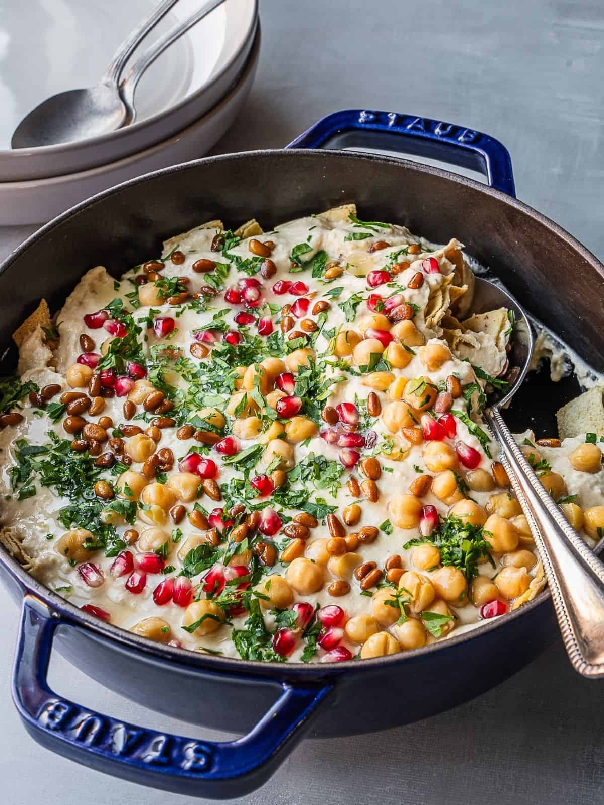

Fattet Hummus

Description
Fattet hummus is a delicious and hearty Middle Eastern dish that layers crispy pita bread, creamy hummus, tangy yogurt, and toasted nuts. It's a popular breakfast or brunch choice, often enjoyed during Ramadan. The combination of textures and flavors makes it a satisfying and comforting meal.
Ingredients
- For the Hummus:
- 1 can (15 ounces) chickpeas, drained and rinsed
- 1/4 cup tahini
- 1/4 cup fresh lemon juice
- 2 cloves garlic, minced
- 1 teaspoon ground cumin
- 1/2 teaspoon salt
- 1/4 cup water
- For the Fatteh:
- 1 cup plain Greek yogurt
- 1/4 cup toasted pine nuts
- 1/4 cup olive oil
- 1/4 teaspoon ground sumac
- 1/4 teaspoon ground cinnamon
- 1/4 teaspoon salt
- 1/4 teaspoon black pepper
- 1/2 cup crumbled pita bread, toasted
- Fresh parsley, for garnish
- A few tablespoons of the liquid from the canned chickpeas
Steps
- Prepare the Hummus:
- Combine Ingredients: In a food processor, combine chickpeas, tahini, lemon juice, garlic, cumin, salt, and water.
- Blend: Process until smooth and creamy, adding more water as needed to reach your desired consistency.
- Prepare the Fatteh:
- Toast Pita Bread: Cut pita bread into small pieces and toast in a preheated oven at 350°F (175°C) for 5-7 minutes, or until golden brown.
- Mix Yogurt Topping: In a bowl, combine Greek yogurt, pine nuts, olive oil, sumac, cinnamon, salt, and pepper. Mix well.
- Assemble the Fatteh:
- Layer 1 (Base): Spread a layer of toasted pita bread in a deep dish.
- Layer 2 (Soaking): Pour a few tablespoons of the liquid from the canned chickpeas over the bread to soften it.
- Layer 3 (Hummus): Spread a layer of the prepared hummus over the softened bread.
- Layer 4 (Yogurt Topping): Top with the yogurt mixture.
- Garnish: Sprinkle with toasted pine nuts, sumac, and fresh parsley.
- Serve Immediately
Enjoy the warm, flavorful layers of this traditional Syrian dish.